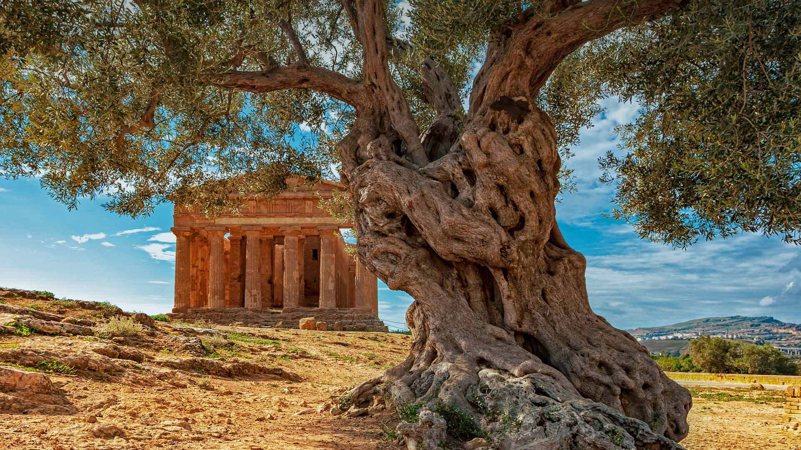

澳大利亚费尔德山国家公园
一汪碧水两茫茫,和澳大利亚大陆一样，塔斯马尼亚岛拥有许多独特的景观和生态系统，费尔德山国家公园便是该岛多样性的壮观展示。今天壁纸里出现了许多森林覆盖的海岸，徒步穿越珍稀的潘达尼树林，到处都是棕榈树，还有一些被称为公园之家的稀有动植物。如果这还不够的话，公园里的山脉在白雪皑皑的冬天还有滑雪道，你是不是心动啦！
葡萄牙亚速尔群岛海域的长须鲸
亚速尔群岛海域的长须鲸,今年是联合国支持的共享地球上所有非人类动物庆祝活动五周年。这是世界野生动物日关注海洋生物的第一年。鳍鲸，就像一个在我们今天的照片中，被列为保护状态排名的“脆弱”。因此，他们受到气候变化，污染，航运和其他问题的威胁，但他们已经从20世纪初的边缘反弹回来了，几个世纪以来，捕鲸船员一直猎杀长须鲸，几乎灭绝。
阿拉斯加威廉王子湾的海獭
埃克森瓦尔迪兹漏油事件30年后，阿拉斯加威廉王子湾的海獭 ,30年前的今天，美国历史上最大的油轮漏油事故发生在阿拉斯加的威廉王子湾。当埃克森-瓦尔迪兹油轮撞上布莱礁时，超过1000万加仑的石油流入了曾经纯净的水域。这个地区非常偏远，清理工作被推迟，1300英里的海岸线被污染。美国鱼类和野生动物管理局估计，在其他伤亡中，超过25万只海鸟、2800只海獭、300只海豹、250只秃鹰和22只虎鲸丧生。这次泄漏虽然具有破坏性，但在科学家研究生态系统如何恢复和没有恢复的过程中，它提供了一个活的实验室。一些物种及其栖息地仍然受到泄漏的影响。至少有一个亮点：政府机构表示，这里的海獭种群已经完全恢复；然而，当地的亚种整体上仍然处于濒危状态。
俄勒冈太平洋沿岸的刘易斯和克拉克国家公园
大自然与历史的完美融合 ,艾克拉州立公园是刘易斯和克拉克国家历史公园的其中一个景点，在公园里，你可以走在梅里韦瑟·刘易斯和刘易斯·克拉克曾经走过的台阶上，他们于1805年11月中旬抵达太平洋。在到达西海岸后不久，探险队投票决定需要在今日阿斯托利亚附近过冬，在那里他们建造了克拉索普堡。这些具有历史意义的地点如今已经成为风景秀丽的俄勒冈海岸的热门景点。
南极洲最北端的南极半岛日落
极地余晖,见过南极的日落吗？这张壁纸拍摄于南极洲最北端的南极半岛，今天我们就来介绍一下这块遥远神秘的大陆。1959年的今天，12个国家签署了《南极条约》，将这片冰原覆盖的大陆列为面向所有国家开放的科学研究场所，并禁止在这里进行任何军事活动。从那之后，共有53个相继加入这个条约，并在南极进行的科学考察活动。
爱沙尼亚横跨塔尔图县的阳光
四周都是海的美丽国度 ,塔尔图县位于爱沙尼亚的沃尔茨湖和楚德湖之间，这里主要是森林湿地和一些农田。然而，在远离幽静森林和湿地的地方，有一个异常热闹的塔尔图市，市里有一个熙熙攘攘的大学城，这里的文化积淀深受这座城市的影响，这里被称为知识分子的天堂，有着浓厚的知识氛围。
北极圈内的格陵兰岛最大城市：努克
心生向往的“童话国”,壁纸中的努克看起来可能并不像一个熙熙攘攘的大都市，但它的确是格陵兰岛最大的城市和首都。格陵兰全境大部分处在北极圈内，居民不到56000人，其中将近三分之一的人都在努克生活。这儿的大部份民居都是北欧式独立小屋，也有部份屋苑住宅，看起来很朴素。
意大利托斯卡纳的干草垛
现实中的莫奈油画 ,又到了金灿灿的收获的季节，秋天田野中最常见的就是干草垛了吧。如今，农民们使用先进的机器来处理干草的方方面面。壁纸中托斯卡纳田野里这些圆而均匀的干草垛很可能是用打包机打出来的。这些圆形的干草垛虽然不像矩形那样容易操作，但更耐潮湿。那么在这个收获季，你有什么新的收获呢？
新墨西哥州阿尔伯克基的热气球嘉年华
一件浪漫的小事儿 ,欢迎来到新墨西哥州的阿尔伯克基国际热气球嘉年华，这个节日将持续到10月14日。从壁纸中我们可以看到，除了可以乘坐热气球来到城市的东部，桑迪亚山脉的山麓丘陵外，还可以在地面上享受很多娱乐活动。许多热气球旅行还提供香槟吐司作为体验的一部分。那么，和我们来做这样一件浪漫的小事儿吧，乘坐热气球换种视角感受世界！
美国犹他州锡安国家公园的维尔京河
锡安国家公园的维尔京河,锡安国家公园的维珍河我们的照片把我们带到了维珍河的16英里处，它在犹他州的锡安峡谷上游划出了一条壮观的千尺深的峡谷。维尔京河流经锡安国家公园（今天已经103岁了！），由于科罗拉多高原、大盆地和莫哈韦沙漠交汇的地方有独特的生物群落，所以这里有其他地方没有的独特植物和动物。如果没有维珍河系统的水，像地球上最稀有的物种之一--伤鳍小鱼这样的生物就不可能存在。
意大利西西里岛的一棵橄榄树
虽然并非每个人都能认出这是一棵橄榄树，但我们大多数人知道“伸出橄榄枝”代表着一种和平友好的姿态。2019年，联合国教科文组织把每年的11月26日设立为世界橄榄树日，旨在让人们关注解决全球冲突和保护橄榄树，比如照片里这棵站在意大利康科迪亚神庙前的橄榄树。这座保存完好的希腊多利安式神庙建于公元前440年，位于如今的西西里岛南岸。橄榄树原产于地中海沿岸地区，如今，一些气候相似的地方也有种植，如美国加利福尼亚和以色列的部分地区。约90%的橄榄会被用于生产橄榄油，这是地中海料理的特色。 橄榄的种植历史与人类文明的历史同样悠久。虽然橄榄树长得不高，通常不超过30英尺，但是它们的寿命很长。世界上已知最古老的橄榄树之一，是一棵生长在葡萄牙的橄榄树，已经3350岁了。许多树木活了几千年，它们的树干变得厚实粗糙，它们的树枝结出果实世纪不断，静静地看着周围的文明起起落落。
委内瑞拉洛斯罗克斯群岛国家公园的美洲红鹳
俯瞰正在飞越洛斯罗克斯群岛国家公园的美洲红鹳,今天是拉丁美洲和南美洲的世界候鸟日，为了纪念这一天，我们选择了这些在委内瑞拉海岸外加勒比海上空的美洲红鹳。白天时间和食物供应的变化会引发包括美洲红鹳在内的许多鸟类的季节性迁徙。像这样的美国美洲红鹳迁徙距离相对较短，通常是为了确保稳定的食物供应。它们主要分布在加勒比海地区，分布范围从北到南佛罗里达州世界候鸟日的非营利赞助机构“美洲环境”将其工作重点放在保护数百种鸟类的栖息地上，这些鸟类在美洲从阿拉斯加和加拿大到阿根廷和智利沿南北路线迁徙以及介于两者之间的地方。这些候鸟中的大多数都使用已建立的称为飞行路线的飞行路线在它们的繁殖地和越冬地区之间旅行。这些空中公路往往避开山脉和海洋等障碍物，与地形障碍物平行，沿着海岸或主要河谷的路线行驶。在北美迁徙的鸟类沿着大西洋、密西西比、中环和太平洋四条主要航线迁徙。由于鸟类在沿途的中途停留点需要足够的食物和庇护所，通过这些走廊保护栖息地对鸟类的生存尤为重要。